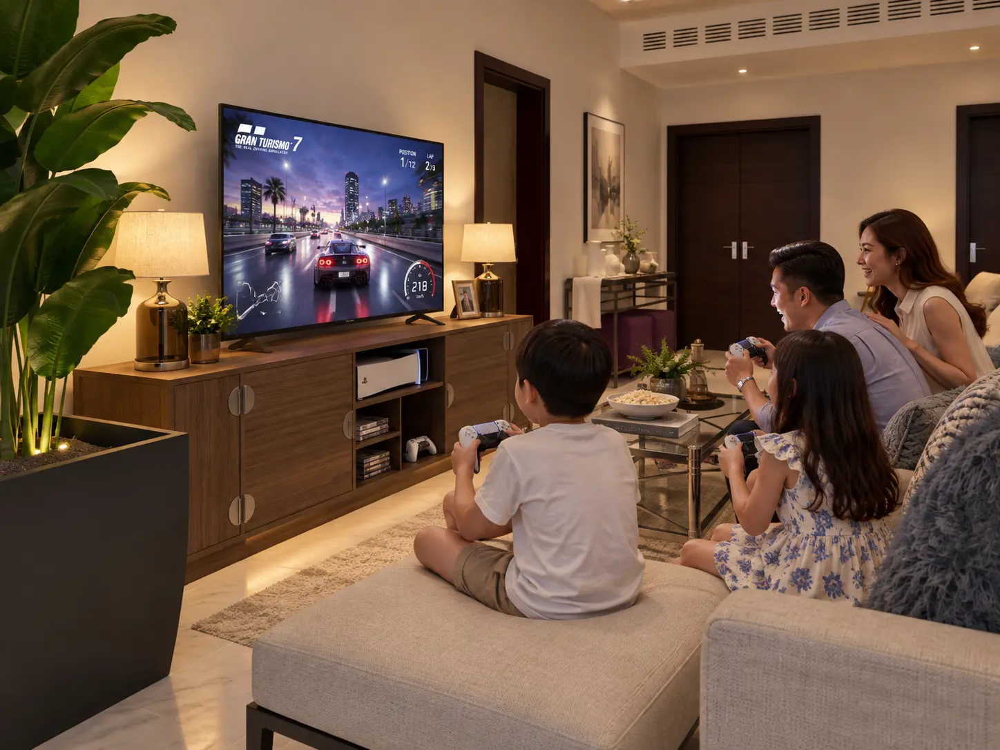
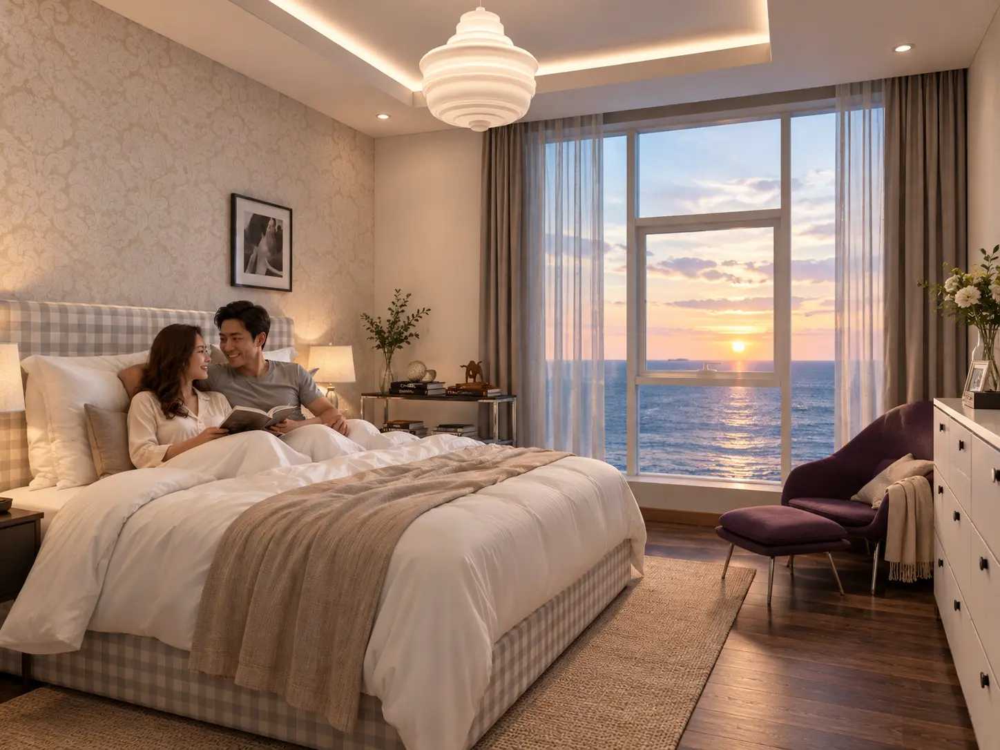

PRIVATE RESIDENCE · 2018
A Home Around
Family Life
A house-renovation visualization developed to communicate atmosphere, material character and everyday family use before construction.

VISUAL NARRATIVE
The imagery goes beyond empty interiors by showing how the family would occupy each zone—eating, relaxing, studying, playing music and resting—so scale and atmosphere become immediately understandable.

